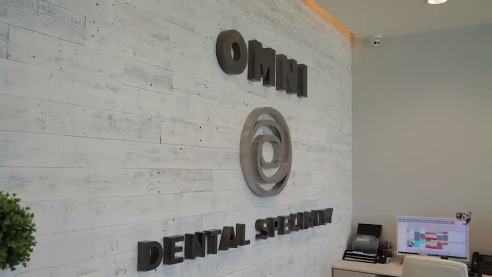

If you live in El Rio, our Oxnard office is here for routine exams, tooth pain, missing teeth and cosmetic questions. On this page we walk through common dental needs, the services people ask about and how to plan your first visit with us.
Dr. Kourosh Keihani, DDSCosmetic Dentist & General Dentist
Visit our location1690 E. Gonzales Road, Oxnard

Our family-friendly dental office delivers a comprehensive range of dental services designed to meet the diverse oral health needs of patients of all ages. Whether you’re seeking general dentistry, Invisalign solutions, dental crowns, veneers, or teeth whitening, our dedicated staff and experienced dentists ensure personalized treatment plans tailored to your specific dental care needs.
With a patient-centered approach and cutting-edge technology, our dental team focuses on providing exceptional care and comfort throughout each treatment. From routine dental exams and preventive care to complex restorative procedures such as dental implants, root canals, and TMJ therapy, we prioritize your health and well-being during every appointment. Emergency dentistry options are also available for immediate attention when dental issues arise unexpectedly in El Rio or the surrounding areas.
As one of the top dental care providers in El Rio and Oxnard, CA, our mission is to enhance smiles and promote lifelong oral health with compassion and professionalism. Schedule your dental appointment today and experience outstanding dental care in El Rio. Contact Omni Dental Specialty at +1 805-366-6000 to book your visit and explore our extensive range of dental services tailored just for you.
Why patients choose us
Why Choose Omni Dental Specialty
Omni Dental Specialty provides specialized dental care in El Rio, delivering advanced treatments with genuine compassion.
01
State-of-the-Art Technology for Precise Treatment
We invest in cutting-edge dental equipment to enhance your treatment outcomes. Our 3D CBCT imaging provides detailed views for accurate diagnosis. Digital microscopes allow precise root canal therapy, while laser technology enables minimally invasive gum treatments for patients in El Rio. These advanced tools mean faster healing times and more comfortable dental procedures for all community members seeking dental care at our office.
02
Personalized Care Plans Tailored to Your Needs
Every patient at our El Rio dental office receives an individualized treatment strategy. We conduct thorough consultations, explaining your dental condition and options clearly. Whether you need a single root canal or comprehensive periodontal therapy, we design treatments around your schedule and budget. This personalized approach ensures optimal dental health outcomes for patients throughout El Rio.
03
Commitment to Patient Comfort and Anxiety-Free Experiences
We understand dental anxiety affects many patients in the El Rio community. Our dental team provides sedation options ranging from nitrous oxide to oral conscious sedation. Private treatment rooms feature calming amenities for a relaxed dental visit. We explain each step before proceeding, maintaining open communication throughout your appointment. Our goal: transforming dental specialty care into a positive experience for every El Rio patient who visits our dental office.
Contact Omni Dental Specialty at (805) 366-6000 to schedule your dental consultation and experience the difference specialized dental care makes for your oral health.
Expert Dental Team and Specialized Services Tailored to Your Needs
At Omni Dental Specialty, our experienced dental professionals bring decades of combined expertise to every patient in El Rio. Each team member holds industry certifications and stays current with the latest techniques and technologies in their dental field.
Our comprehensive dental service offerings cover everything from initial consultation through treatment completion. Whether you need routine dental cleanings, emergency dentistry, or complete smile restoration, we have the right dental solution for your situation. We customize our approach based on your budget, timeline, and unique dental requirements for optimal oral health.
What sets Omni Dental Specialty apart is our commitment to personalized dental service. We don’t believe in one-size-fits-all solutions for El Rio patients. Instead, we take time to understand your dental needs, assess your current oral health situation, and develop a tailored treatment plan that delivers optimal results. Our dental team conducts thorough evaluations before recommending any service, ensuring you receive exactly what you need, nothing more, nothing less.
We offer flexible scheduling, including same-day appointments for urgent dental needs in El Rio. Our transparent pricing means no surprises on your final bill. Every dental service includes a detailed explanation of the work performed and recommendations for maintaining optimal oral health long-term for El Rio community members.
We stand behind our dental care with comprehensive warranties and follow-up support. When you choose Omni Dental Specialty, you’re choosing a dental provider invested in your long-term oral health satisfaction.
From family dentistry to specialized dental treatments, our team has the skills and experience to handle dental care of any complexity for El Rio patients. We pride ourselves on clear communication throughout the dental process, keeping you informed at every step of your treatment.
Ready to experience the difference in dental care? Contact Omni Dental Specialty today at (805) 366-6000 to schedule your dental consultation and discover how our expert dental team can serve your specific needs in El Rio.
Patient-Centered Approach with State-of-the-Art Dental Technology
Omni Dental Specialty combines compassionate dental care with cutting-edge dental technology to deliver exceptional results for every El Rio patient. Our dental office features digital X-rays that reduce radiation exposure by 90%, intraoral cameras for precise diagnostics, and same-day crown technology that eliminates multiple appointments. We prioritize your comfort with amenities like massage chairs, noise-canceling headphones, and personalized dental treatment plans tailored to your specific needs and goals.
01
Advanced Diagnostic Tools for Precision Treatment
Our digital imaging systems provide instant, crystal-clear views of your teeth and jaw structure, enabling accurate diagnosis and treatment planning for El Rio patients. The 3D cone beam CT scanner reveals hidden infections and bone density issues that traditional X-rays miss. Intraoral cameras display real-time images on chairside monitors, helping you understand your oral health and make informed decisions about your dental care. These advanced tools allow our dental team to detect problems early, often before symptoms appear, saving you time, money, and discomfort throughout your dental treatment journey.
02
Comfortable Dental Treatment Experience
We understand dental anxiety affects 36% of patients¹, which is why Omni Dental Specialty invested in comfort-enhancing technology for our El Rio dental patients. Our laser dentistry eliminates drill noise and reduces healing time by 50%². Sedation options range from nitrous oxide to oral conscious sedation, ensuring relaxation throughout your dental visit. Temperature-controlled anesthetic delivery systems minimize injection discomfort, while our treatment rooms feature calming aromatherapy and streaming entertainment options to create the most comfortable environment for dental care in El Rio.
03
Same-Day Dental Solutions and Digital Workflow
CEREC technology creates custom crowns in under two hours, eliminating temporary crowns and return visits for busy El Rio patients. Digital impressions replace messy traditional molds, capturing precise measurements in minutes for more accurate dental work. Our integrated practice management software streamlines scheduling, insurance verification, and treatment planning, respecting your valuable time. This efficient approach to dental care means fewer appointments, faster results, and more convenient care that fits the busy lifestyle of El Rio community members.
Ready to experience modern dentistry that puts patients first? Call Omni Dental Specialty today to schedule your dental consultation and begin your journey to optimal oral health.
¹ Journal of Dental Research, 2021 ² International Journal of Laser Dentistry, 2023
²Journal of Digital Dentistry, 2023
³Internal patient satisfaction surveys, 2023-2024
General dentistry
General Dentistry Services for Patients of All Ages in El Rio
Omni Dental Specialty provides comprehensive general dentistry services to families throughout El Rio, offering personalized dental care for patients from toddlers to seniors. Our experienced dental team delivers preventive, restorative, and cosmetic treatments in a comfortable, modern dental office designed to make every visit stress-free for the entire family.
01
Preventive Care and Routine Dental Cleanings
Professional dental cleanings and examinations form the foundation of lifelong oral health. Our dental hygienists remove plaque and tartar buildup that regular brushing can’t reach, preventing cavities and gum disease before they start. During your twice-yearly visits, we perform thorough dental examinations, oral cancer screenings, and digital X-rays to catch potential issues early. We also provide fluoride treatments and dental sealants for added protection against dental decay for El Rio patients of all ages.
Ready to protect your family’s smiles? Call Omni Dental Specialty today at (805) 366-6000 to schedule your preventive dental care appointments at our El Rio location.
04
Preventive Care, Exams, Cleanings, and Oral Health Education
Omni Dental Specialty provides comprehensive preventive dental care services to maintain and protect the oral health of El Rio patients. Our preventive dental care program combines professional dental cleanings, thorough examinations, and personalized education to help you avoid costly dental problems before they start.
Regular dental cleanings remove plaque and tartar buildup that daily brushing cannot eliminate. Our dental hygienists use specialized tools to clean below the gumline, preventing gum disease that affects nearly half of adults over 30¹. Professional dental cleanings every six months reduce cavity risk by 40% and help detect oral cancer early, when survival rates exceed 80%². This preventive approach is essential for maintaining optimal dental health in the El Rio community.
During comprehensive dental exams, Omni Dental Specialty utilizes digital X-rays and intraoral cameras to identify hidden problems. We check for cavities, gum disease, oral cancer, and jaw issues that could lead to expensive treatments if left untreated. Early detection saves El Rio patients thousands of dollars in restorative dental procedures while preserving natural tooth structure.
Our dental team provides customized oral health education based on your specific needs. We demonstrate proper brushing and flossing techniques, recommend dental products for your unique situation, and explain how diet affects dental health. Patients who receive preventive education show 60% better oral hygiene compliance³, leading to better long-term dental outcomes for El Rio residents.
Preventive dental care at Omni Dental Specialty includes:
Professional dental cleanings and polishing
Comprehensive oral examinations
Digital X-rays for early detection
Oral cancer screenings
Personalized hygiene instruction
Dietary counseling for optimal oral health
02
Restorative Dentistry Solutions
When dental problems arise, our restorative dental treatments help El Rio patients regain full function and confidence. We offer tooth-colored fillings that blend seamlessly with your natural teeth, durable dental crowns for damaged teeth, and fixed bridges to replace missing teeth. Our same-day crown technology means you can restore your smile in just one visit to our dental office. For patients with multiple missing teeth, we provide both partial and full dentures customized for optimal comfort and appearance.
03
Family-Friendly Dental Services
Creating positive dental experiences for every family member drives our patient-centered approach to dental care in El Rio. Our gentle pediatric care helps children develop healthy oral hygiene habits early, while our senior dental services address age-related oral health concerns. We accommodate busy family schedules with convenient appointment times and can often see multiple family members during the same visit to our dental office. Our bilingual staff ensures clear communication for all El Rio residents seeking dental care services.
Don’t wait for dental problems to develop. Contact Omni Dental Specialty at (805) 366-6000 or visit our dental office near El Rio to experience compassionate, comprehensive dental care for your entire family.
Investing in preventive dental care today protects your smile and wallet tomorrow. Schedule your preventive care appointment with Omni Dental Specialty to maintain excellent oral health and avoid complex dental issues in the future.
¹ CDC. Periodontal Disease Statistics. 2023. ² American Cancer Society. Oral Cancer Detection and Survival Rates. 2023. ³ Journal of Dental Hygiene. Patient Education and Compliance Outcomes. 2022.
What we offer
Dental Services in Oxnard, CA
Routine care, smile makeovers and tooth replacement under one roof at 1690 E. Gonzales Road.
01
Dental Implants
Titanium implants that replace missing teeth with stable, natural-looking restorations.
Not sure what you need?Start With an Exam in OxnardDr. Keihani will look at what is going on and explain your options.Book Online (opens in a new tab)
Treatment plans
Personalized Dental Treatment Plans for Lifelong Dental Wellness
Every patient deserves dental care tailored to their unique needs, lifestyle, and health goals. Our dental practice creates customized treatment strategies that evolve with you throughout life, ensuring optimal oral health at every stage for El Rio residents.
01
Comprehensive Initial Dental Assessment
Your personalized dental journey begins with an in-depth evaluation examining your dental history, current oral health, medical conditions, and personal concerns. We utilize advanced diagnostic technology, including digital X-rays and intraoral cameras, to create a complete picture of your oral health. This thorough dental assessment allows our team to identify potential issues early and develop preventive strategies specific to your risk factors, ensuring the best possible dental outcomes for patients in the El Rio area.
03
Long-term Oral Health Planning
Your dental treatment plan extends beyond immediate needs to encompass future oral health goals. We map out a timeline for necessary dental treatments, cosmetic enhancements, and preventive measures for El Rio patients. This proactive approach helps you budget for dental care and avoid emergency situations. Regular plan reviews ensure your dental strategy adapts to life changes such as pregnancy, medical diagnoses, or aging-related concerns.
Our dental team monitors your progress at each visit, adjusting recommendations based on your response to treatment and evolving needs. This dynamic approach to dental care maximizes treatment effectiveness while minimizing invasive procedures for lasting oral health.
02
Customized Dental Prevention Strategies
Prevention forms the foundation of lifelong dental wellness for El Rio patients. Based on your assessment, we design individualized prevention protocols that may include specialized cleaning schedules, targeted fluoride treatments, or custom night guards for teeth grinding. Patients with higher cavity risk receive tailored recommendations for dietary modifications and enhanced home care routines. Those prone to gum disease benefit from more frequent professional dental cleanings and specific oral hygiene techniques to maintain optimal gum health.
Schedule your comprehensive dental assessment today to begin your personalized path to lifelong dental wellness in El Rio. Call (805) 366-6000 or request an appointment online to discover how customized dental care can transform your oral health journey.
Invisalign: Modern, Comfortable Orthodontic Options Tailored for You
Omni Dental Specialty provides Invisalign treatment featuring clear, removable aligners that straighten teeth without traditional metal brackets. This advanced orthodontic system uses custom-made plastic trays to gradually shift teeth into proper alignment while maintaining your natural smile throughout the treatment process.
01
What Is Invisalign?
Invisalign consists of BPA-free thermoplastic aligners created from 3D digital impressions of your teeth. The SmartTrack® material applies gentle, consistent pressure to move teeth predictably. Each set of aligners shifts teeth incrementally over 1-2 weeks before progressing to the next set. Treatment typically requires 12-18 months¹, with patients wearing aligners 20-22 hours daily for optimal results. Our El Rio dental office provides comprehensive Invisalign consultations to determine if this treatment option is right for your specific dental needs.
02
Benefits of Invisalign Treatment
Clear aligners offer removability for eating and oral hygiene, eliminating dietary restrictions common with braces. The smooth plastic prevents mouth irritation from wires or brackets. Invisalign requires fewer office visits, typically every 6-8 weeks², saving time for busy El Rio patients while achieving excellent results. The virtually invisible appearance maintains professional aesthetics during treatment, making it ideal for adults and image-conscious teens throughout the El Rio community.
03
Invisalign vs. Traditional Braces
Traditional braces use fixed metal brackets and wires, requiring monthly adjustments at a dental office. Invisalign’s removable system allows normal brushing and flossing, reducing cavity risk by 50% compared to braces³. While braces treat all orthodontic cases, Invisalign effectively corrects mild to moderate alignment issues, crowding, gaps, and certain bite problems. Treatment time remains comparable, though Invisalign often provides faster results for minor corrections, making it a popular choice for many El Rio patients seeking orthodontic treatment.
Ready to transform your smile discreetly? Contact Omni Dental Specialty at (805) 366-6000 to schedule your Invisalign consultation and discover if clear aligners suit your orthodontic needs.
¹American Association of Orthodontists, 2023 ²Invisalign Treatment Planning Guide, Align Technology, 2024 ³Journal of Clinical Orthodontics, Vol. 57, 2023
Clear aligners
Clear Aligners for Discreet, Effective Teeth Straightening
Omni Dental Specialty offers clear aligners in El Rio that transform smiles without the appearance of traditional metal braces. These virtually invisible aligners straighten teeth using custom-fitted, removable trays that gradually shift teeth into proper alignment for dental patients seeking aesthetic orthodontic options.
Clear aligners work through a series of custom-made plastic trays that apply gentle, consistent pressure to move teeth. Each set is worn for approximately two weeks before progressing to the next tray in the sequence. The BPA-free thermoplastic material ensures safety while maintaining transparency for discreet treatment throughout the alignment process.
01
Benefits of Clear Aligners
Patients choosing clear aligners from Omni Dental Specialty enjoy the removable convenience for eating and oral hygiene. Unlike traditional braces, aligners allow normal brushing and flossing routines for better dental health. The smooth plastic eliminates mouth irritation common with metal brackets and wires. Treatment typically requires fewer dental office visits than traditional orthodontics, saving valuable time for busy El Rio residents.
Professional teeth straightening with clear aligners corrects various issues, including crowding, gaps, overbites, and underbites. The predictable treatment process uses 3D imaging technology to map precise tooth movements from start to finish, providing El Rio patients with a clear visualization of their expected results.
02
Clear Aligner Treatment Process
The journey begins with a comprehensive consultation at Omni Dental Specialty to determine candidacy. Digital impressions create accurate 3D models of your teeth without messy traditional molds. Our dental team develops a customized treatment plan showing each stage of tooth movement throughout the alignment process.
Patients receive multiple sets of aligners with specific wear instructions. Regular check-ups every 6-8 weeks monitor progress and provide new aligner sets. Most treatments complete within 12-18 months, though timing varies by case complexity and individual dental needs.
Ready to achieve your dream smile discreetly? Call Omni Dental Specialty today at (805) 366-6000 to schedule your clear aligner consultation and discover how invisible orthodontics can transform your smile without disrupting your lifestyle in El Rio.
At Omni Dental Specialty, we understand that seeking dental treatment represents a significant step toward improving your quality of life. Our comprehensive approach addresses both immediate dental concerns and long-term wellness goals for patients in El Rio.
Dental treatment begins with a thorough consultation where we assess your specific oral health needs and develop a personalized plan. This initial evaluation allows our dental team to identify the root causes of your concerns rather than merely addressing symptoms. Our experienced dentists utilize proven methodologies combined with cutting-edge techniques to ensure optimal outcomes for every dental procedure.
Key benefits our El Rio patients experience include:
Significant reduction in dental symptoms within the first few sessions
Improved daily functioning and quality of life through better oral health
Enhanced coping strategies for long-term dental management
Better overall health through improved oral hygiene
Increased self-confidence with a healthier, more attractive smile
The dental treatment process typically follows a structured yet flexible framework at our office. After your initial assessment, we implement targeted interventions designed specifically for your situation. Regular progress evaluations ensure we’re meeting your goals and allow for adjustments as needed throughout your dental care journey.
Our approach emphasizes sustainable results through evidence-based dental practices. Treatment sessions are scheduled at intervals that promote steady progress while respecting your time and commitments. Most patients report noticeable improvements in oral health within 4-6 weeks, though individual timelines vary based on specific dental circumstances and treatment complexity.
Throughout your journey with Omni Dental Specialty, you’ll receive continuous support and guidance from our dental staff. We maintain open communication channels, ensuring you feel heard and understood at every stage of your dental treatment. Our team collaborates closely to provide comprehensive care that addresses all aspects of your oral health and well-being.
The investment in quality dental treatment yields returns that extend far beyond symptom relief. Patients develop habits and insights that serve them throughout life, creating lasting positive change in their oral health. We’re committed to helping El Rio residents achieve not just dental recovery, but genuine transformation through expert dental care.
Contact us today at (805) 366-6000 to begin your journey toward better dental health and wellness in El Rio.
Restorative Dental Solutions: Dental Crowns, Veneers, and Teeth Whitening for a Healthy, Beautiful Smile
Omni Dental Specialty transforms damaged, discolored, and worn teeth into healthy, radiant smiles through comprehensive restorative dentistry solutions. Whether you need to repair a broken tooth, enhance your smile’s appearance, or achieve a brighter shade, our experienced dental team delivers personalized treatments that restore both function and beauty for patients in El Rio.
01
Dental Crowns for Damaged Teeth
Dental crowns restore severely damaged teeth by covering the entire visible portion with a custom-made cap. Omni Dental Specialty uses advanced materials, including porcelain, ceramic, and zirconia, to create dental crowns that match your natural teeth perfectly. Crowns protect weakened teeth from further damage, restore proper chewing function, and last 10-15 years with proper care[1]. We complete most crown procedures in just two visits using digital impressions for maximum comfort and precision for our El Rio dental patients.
Ready to save your damaged tooth? Call Omni Dental Specialty today for a dental crown consultation at our office near El Rio.
02
Porcelain Veneers for Smile Makeovers
Porcelain veneers dramatically improve your smile by correcting chips, gaps, stains, and misshapen teeth. These ultra-thin shells bond permanently to your tooth fronts, creating a flawless appearance that looks completely natural. Omni Dental Specialty custom-designs each veneer to complement your facial features and smile goals. Veneers resist staining better than natural teeth and typically last 10-20 years[2], making them an excellent long-term investment for El Rio patients seeking cosmetic dental improvements.
Transform your smile in just two appointments. Contact our dental office to schedule your veneer consultation and discover how this treatment can enhance your appearance and confidence.
03
Professional Teeth Whitening Services
Professional teeth whitening brightens your smile up to 8 shades in a single visit to our dental office. Omni Dental Specialty offers both in-office treatments and custom take-home systems that remove years of stains from coffee, wine, and aging. Our professional whitening treatments are safer and more effective than store-bought options, with results lasting 1-3 years[3] for El Rio patients seeking a brighter smile.
Schedule your teeth whitening appointment with Omni Dental Specialty for a brighter, more confident smile today. Our dental team is ready to help you achieve the brilliant smile you’ve always wanted with safe, effective whitening solutions.
[1] American Dental Association. “Crowns.” 2023. [2] Journal of Prosthetic Dentistry. “Longevity of Porcelain Veneers.” 2022. [3] American Academy of Cosmetic Dentistry. “Teeth Whitening Guidelines.” 2023.
Crowns and veneers
Durable Dental Crowns and Custom Veneers for Aesthetic Restoration
Omni Dental Specialty provides durable dental crowns and custom veneers to restore your smile’s beauty and function. Our advanced restorative dentistry combines cutting-edge materials with precision craftsmanship to deliver results that look natural and last for years, helping El Rio patients achieve optimal dental aesthetics.
Dental crowns protect damaged teeth while restoring their original shape and strength. When decay, fractures, or large fillings compromise tooth structure, our custom-fitted crowns provide complete coverage and protection. Modern dental crown materials include:
Porcelain crowns that match your natural tooth color perfectly
Zirconia crowns offering exceptional strength for molars
E-max crowns combining beauty with durability
Our crown placement process typically requires just two visits to our dental office. During your first appointment, we prepare the tooth and take precise digital impressions. Your permanent crown arrives from our trusted lab within 7-10 days, ensuring El Rio patients receive the highest quality dental restorations.
Custom veneers transform smiles by correcting multiple aesthetic concerns simultaneously. These ultra-thin porcelain shells bond directly to your tooth surface, addressing:
Chips and cracks
Severe discoloration
Gaps between teeth
Minor misalignment
Worn or uneven edges
Omni Dental Specialty crafts each veneer to complement your facial features and smile line. Our minimally invasive veneer process preserves maximum tooth structure while delivering dramatic improvements to your smile. Most El Rio patients complete their veneer transformation in just 2-3 appointments at our dental office.
Both crowns and veneers resist staining better than natural teeth, maintaining their appearance with proper care and regular dental checkups. We use high-grade ceramics that mimic natural tooth translucency, ensuring your dental restorations blend seamlessly with surrounding teeth.
The investment in quality restorative dental work pays dividends through improved confidence, better oral health, and long-lasting results. Our patients enjoy eating their favorite foods without worry and smiling without hesitation following crown or veneer placement.
Ready to restore your smile’s full potential? Call Omni Dental Specialty today at (805) 366-6000 to schedule your consultation and discover which restorative dental option best suits your needs in El Rio.
Omni Dental Specialty provides professional teeth whitening services that transform smiles while protecting dental health. Our advanced whitening treatments remove years of stains from coffee, wine, and everyday wear, revealing naturally brighter teeth in just one visit for El Rio patients seeking a more confident smile.
Professional teeth whitening at Omni Dental Specialty uses dental-grade hydrogen peroxide or carbamide peroxide solutions applied under controlled conditions. These FDA-approved formulas penetrate tooth enamel to break down discoloration molecules without damaging tooth structure. Our customized approach ensures optimal results based on your specific tooth shade and sensitivity level, making teeth whitening safe and effective for El Rio dental patients.
01
Professional vs. At-Home Whitening Options
In-office whitening delivers dramatic results in 60-90 minutes, lightening teeth up to 8 shades¹. Our LED-activated gel system provides immediate transformation, perfect for special events or busy schedules. Professional supervision prevents gum irritation and ensures even coverage across all visible teeth for consistent whitening results.
Take-home professional kits from Omni Dental Specialty offer gradual whitening over 10-14 days. Custom-fitted trays hold prescription-strength gel precisely against teeth, preventing waste and protecting soft tissues. This method suits patients with mild sensitivity who prefer whitening at their own pace, providing flexibility for El Rio residents with busy schedules.
02
Maintaining Your Bright Smile
Your new smile stays radiant with proper care and periodic touch-ups. Avoid staining foods and beverages for 48 hours post-treatment when teeth are most porous. Daily brushing with whitening toothpaste and regular professional dental cleanings preserve results for 1-3 years². Our dental team provides customized maintenance recommendations based on your individual habits and needs.
Omni Dental Specialty recommends touch-up treatments every 6-12 months, depending on lifestyle habits. We provide personalized maintenance plans, including professional-grade whitening pens for convenient brightness boosts between visits. This comprehensive approach ensures El Rio patients maintain their whitening results long-term.
Ready to reveal your brightest smile? Contact Omni Dental Specialty today at (805) 366-6000 to schedule your professional whitening consultation and discover which treatment option works best for your smile goals.
¹ American Dental Association. (2023). Tooth Whitening/Bleaching: Treatment Considerations. ² Journal of the American Dental Association. (2022). Longevity of tooth whitening results.
Wisdom teeth
Wisdom Teeth Extraction: Professional Care with Patient Comfort Focus
Omni Dental Specialty provides comprehensive wisdom teeth extraction services with advanced comfort measures and personalized care throughout your treatment journey at our dental office near El Rio.
01
What Are Wisdom Teeth and Why Remove Them?
Wisdom teeth, or third molars, typically emerge between the ages of 17-25. These teeth often require removal when they become impacted, grow at incorrect angles, or cause crowding and pain. Common problems include infection, cyst formation, and damage to adjacent teeth.
03
Recovery Timeline and Aftercare
Initial healing occurs within 3-4 days, with complete recovery in 1-2 weeks. We provide detailed post-operative instructions, including:
Ice application for swelling control
Prescribed pain management
Soft food diet recommendations
Proper oral hygiene techniques
Follow-up appointments ensure proper healing progress throughout your recovery journey.
02
The Extraction Process: What to Expect
Your procedure begins with a thorough consultation and imaging at our dental office. We administer appropriate anesthesia based on your needs: local, sedation, or general anesthesia options available for maximum comfort. The extraction typically takes 30-90 minutes, depending on tooth position and complexity.
04
Benefits of Professional Extraction
Professional wisdom teeth removal at Omni Dental Specialty prevents future complications, including:
Chronic jaw pain and headaches
Tooth decay in hard-to-reach areas
Gum disease and infection
Orthodontic relapse
We accept most dental insurance plans and offer flexible payment options for El Rio patients seeking wisdom tooth extraction.
Schedule your wisdom teeth consultation today, early intervention prevents complications and ensures smoother recovery. Call (805) 366-6000 now for your personalized treatment plan at our dental office serving El Rio.
Recovery timeline data from Journal of Oral and Maxillofacial Surgery (2023)
American Association of Oral and Maxillofacial Surgeons (AAOMS) clinical guidelines
Emergency dentistry
Emergency Dentistry: Prompt Care When You Need It Most
Omni Dental Specialty provides emergency dental services to El Rio patients experiencing sudden oral pain or trauma. When dental emergencies strike unexpectedly, our experienced dental team delivers immediate relief and comprehensive treatment solutions to restore your oral health.
01
Common Dental Emergencies
Severe toothaches, knocked-out teeth, and dental abscesses require immediate professional attention from a dental provider. Broken or chipped teeth from accidents can expose sensitive nerves, causing intense pain. Lost fillings or crowns leave teeth vulnerable to further damage and infection. Jaw injuries and uncontrolled oral bleeding also constitute dental emergencies requiring prompt care from our emergency dentists.
If you’re experiencing severe dental pain or trauma in El Rio, contact Omni Dental Specialty immediately for emergency treatment at our dental office.
03
Why Choose Omni Dental Specialty for Emergency Dental Care
Our emergency dental team prioritizes same-day appointments for urgent cases in El Rio. We maintain extended hours to accommodate dental emergencies beyond regular business times. Our dental office features advanced diagnostic equipment for accurate, rapid assessment of dental trauma.
Omni Dental Specialty accepts most dental insurance plans and offers flexible payment options for emergency dental treatments. Our compassionate staff understands the stress of dental emergencies and works quickly to alleviate pain while providing comprehensive dental care solutions for El Rio residents.
Don’t let dental emergencies worsen. Call Omni Dental Specialty now at (805) 366-6000 for immediate emergency dental care and restore your oral health today.
02
What to Do Before Your Emergency Dental Visit
Take immediate action to minimize damage and reduce pain. For knocked-out teeth, gently rinse and attempt to reinsert into the socket, or store in milk. Apply cold compresses to reduce facial swelling. Rinse with warm salt water to cleanse wounds. Take over-the-counter pain relievers as directed, avoiding aspirin if bleeding is present, while waiting to see our emergency dental team.
Save any broken tooth pieces and bring them to your emergency dental appointment. Document when the injury occurred and any symptoms you’re experiencing to help our dentists provide the most effective emergency treatment.
Same-day emergency care
Emergency Dentistry Services for Immediate Relief
Omni Dental Specialty provides emergency dentistry services to patients experiencing urgent dental pain or trauma in El Rio. When severe tooth pain, dental injuries, or infections strike unexpectedly, our emergency dental team delivers same-day treatment to alleviate suffering and prevent complications.
Dental emergencies require immediate professional intervention from qualified dentists. Untreated dental trauma can lead to permanent tooth loss, spreading infections, and systemic health complications. Our emergency dentists diagnose and treat urgent conditions, including severe toothaches, knocked-out teeth, dental abscesses, broken crowns, and facial swelling for El Rio patients needing immediate dental care.
Omni Dental Specialty treats dental emergencies for patients in the El Rio area. Our emergency protocol includes rapid pain management, infection control, and stabilization procedures. We utilize digital X-rays for accurate diagnosis and offer multiple sedation options for anxious patients experiencing dental emergencies.
Common emergency dental treatments include root canal therapy.
Dr. Keihani is an excellent dentist, experienced and talented to give solutions to my varied dental needs. I’m very thankful His staff is also very friendly and helpful. A well-run clinic.
GGabriele K.Google review★★★★★
KKim P.Google review★★★★★
“Waiting time was 5mins, office staff friendly, doctor let you know what’s going on, and Alijah is happy! That’s what counts to me!!!”
SSusan F.Google review★★★★★
“I had very a good experience at Omni Dental. The staff is very friendly and caring. I highly recommend this office for dental treatment.”
DDaniel A.Google review★★★★★
“Such a great attitude, attention, atmosphere, you can’t ask for more!”
FFelipe G.Google review★★★★★
“Crystal is very professional and curtious I highly recommend her as a hygenist office staff nice.”
Oofast 007Google review★★★★★
“The doctor was excellent the owner of the company very knowledgeable very experienced very hospitable he really knows his dental work very affordable I would recommend him to every person go see this doctor doctor that Omni dental Office”